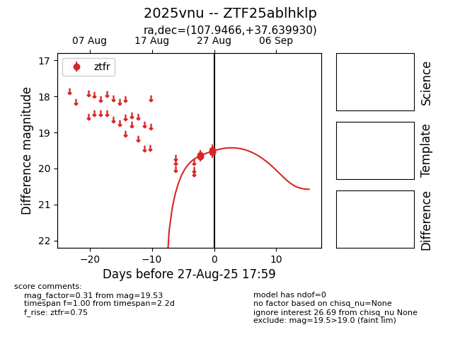

FINK: ZTF25ablhklp
Lasair: ZTF25ablhklp
ALeRCE: ZTF25ablhklp
TNS: 2025vnu
YSE: 2025vnu
ZTF25ablhklp (ztf,fink)
2025vnu (tns,yse)
equatorial (ra, dec) = (107.9466,+37.63993)
galactic (l, b) = (179.9688,+19.93526)

last ztfr=19.72
6 ztfr detections